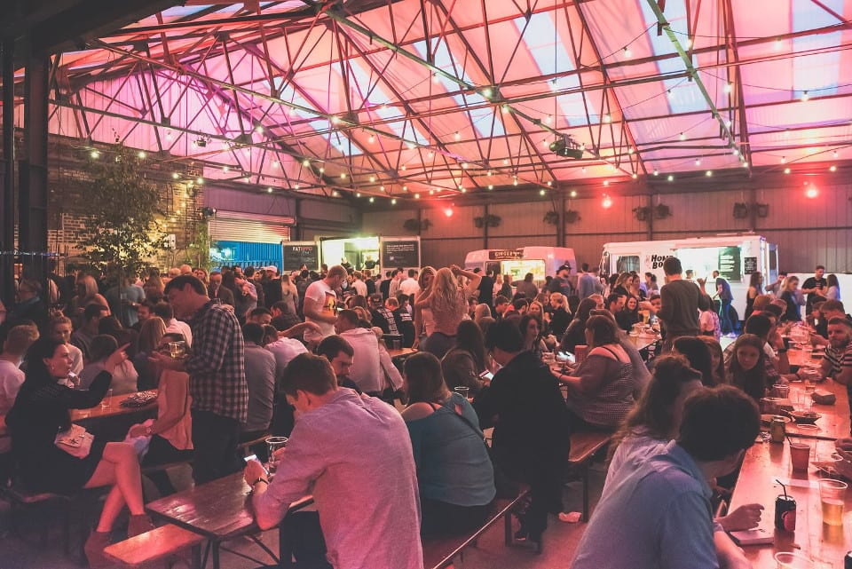

Let's Sushi
Let’s Sushi is a well established small restaurant and takeaway service on Sheffield’s infamous West Street; 2020 saw the expansion of the brand into new premises which has changed the game entirely. Still offering their reliable high quality sushi for a remarkably low price, the new restaurant situated in the upscale West One plaza is stylish and modern. The wide selection of Japanese sake and unique cocktails are a great pairing to the food, which is always served promptly.

Let's Sushi Website
Google Maps
Google Maps
Lucky Fox
Situated in the indie hub of Division Street, Lucky Fox is an independent restaurant specialising in arguably Sheffield’s best fried chicken. Their Chick’n’fries by far outshine any major chain competitors, while still offering a range of options perfect for other dietary requirements. The restaurant space itself has limited capacity, but is a cosy retreat with highly instgram-able urban indie styling.

Lucky Fox Website
Google Maps
Peddler Night Market
Although not strictly a restaurant, the Peddler Night market is a fantastic food experience in Sheffield. Located in the historic and trendy heart of Kelham Island, the peddler market operates as a constantly evolving collective of independent food trucks and stalls. At the start of every month, the peddler warehouse hosts an atmospheric weekend of music, independent merch stalls, and invariably good food; any foodie would hate to miss the opportunity to sample a wide variety of cuisines. The only downside is that queues form quickly for the free entry event, and once a stall runs out of food - which most do - that’s it for the night!

Peddler Market Website
Google Maps
Napoli Centro
Napoli Centro offers some of the finest, most authentic pizzas that Sheffield have to offer. At a very reasonable price, the extensive menu covers both classic and innovative pizzas, cooked the Neapolitan way. The restaurant is located on Glossop road, near the university of Sheffield’s student union, making it a convenient and popular destination for students. One of Napoli’s best features is it’s personal, cosy atmosphere, as there are only a few tables inside, and (unfortunately for us) always book up in advance.

Napoli Centro Website
Google Maps
Vito's Italian Restaurant
A long-standing Sheffield establishment, Vito’s offers some of the finest Italian food, in a homely atmosphere. The upscale menu includes the fantastic crab ravioli, and a wide range of fine wine. Located in the residential area of Walkley, this independent restaurant is perhaps less well-known than others in Sheffield, but this contributes all the more to it’s friendly, personal atmosphere.

Vito's Website
Google Maps